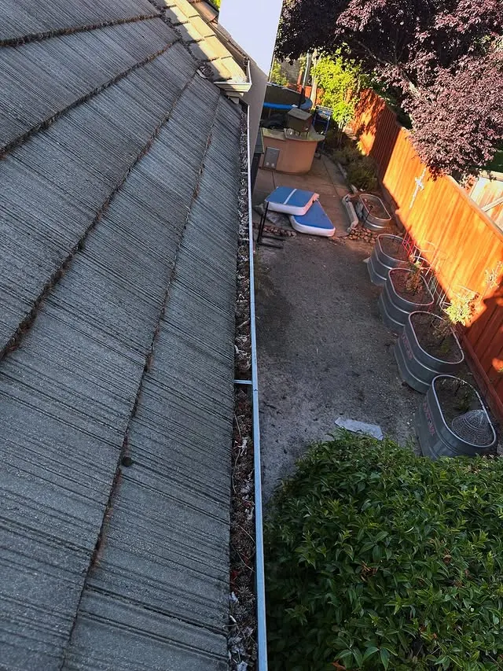
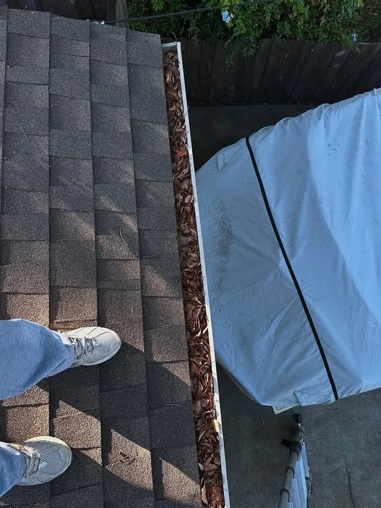
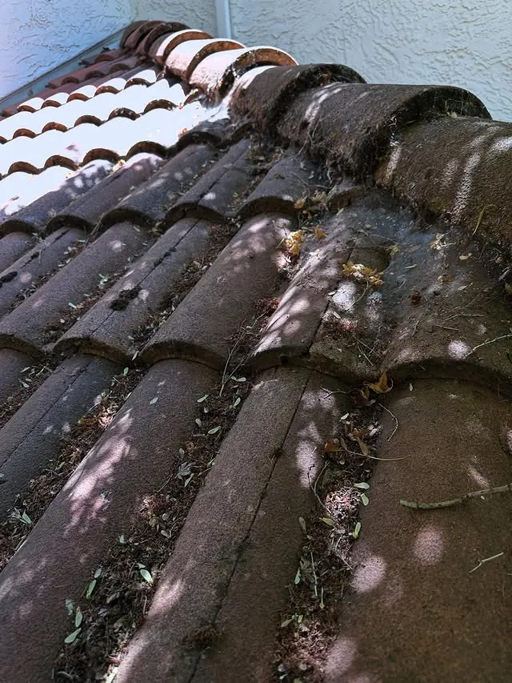
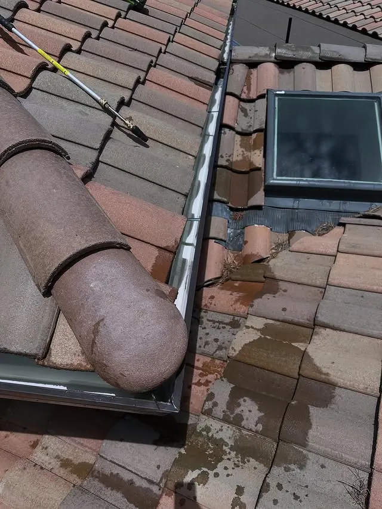
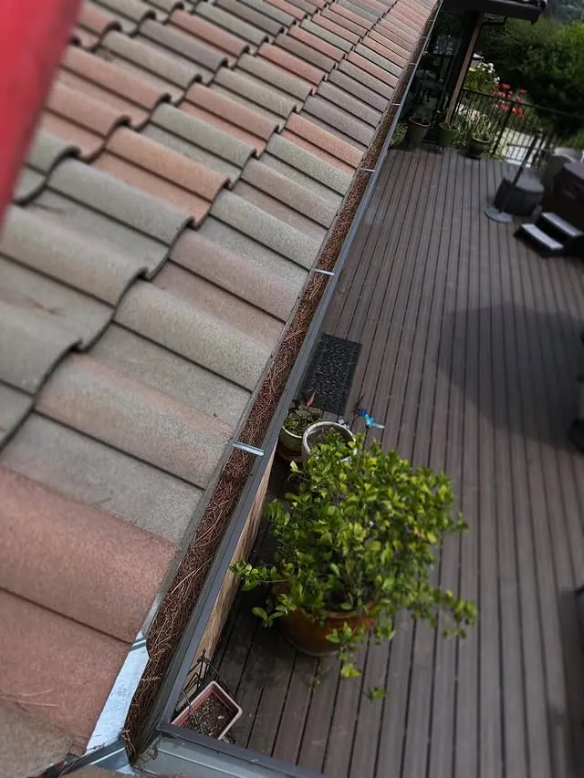
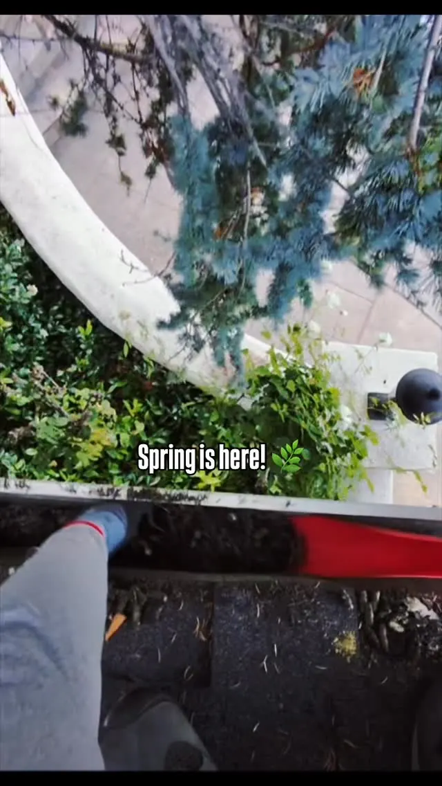

Gutter Cleaning
Leaves, dirt, and debris removed from your gutters, so water can flow freely again instead of overflowing.
Bay Area Gutter Service
Regular gutter cleaning helps prevent clogs, water damage, and costly repairs. Isai's Gutter Cleaning Service clears leaves, dirt, and debris so your gutters drain the way they should.
Free estimates. Serving Concord and surrounding areas.
Two services, done properly — cleaning and gutter guard installation — for homes in Concord and the Bay Area.
Leaves, dirt, and debris removed from your gutters, so water can flow freely again instead of overflowing.
A thorough clean for gutters packed with built-up leaves and debris — the kind that blocks drainage altogether.
Guards fitted to help keep leaves and debris out of your gutters between cleanings.
Every job is finished with the gutters flowing properly — water draining fluidly, not pooling or spilling over.
Clogged gutters don't just look bad — they stop doing their job. A cleaning clears the way for water to get off your roof and away from your home.
Leaves, dirt, and debris are removed before they pack down and block the gutter completely.
Clear gutters drain fluidly, so overflow doesn't soak walls, fascia, or the ground around your home.
Water that drains properly puts less strain on your roof edge and the ground your home sits on.
Regular cleaning catches the small problem — a clog — before it becomes a repair bill.
Real jobs from Isai's Instagram — gutters before and after cleaning, and water flowing properly again.






Isai's Gutter Cleaning Service is based around Concord, California, and serves Concord and surrounding Bay Area communities. If you're nearby and unsure whether you're covered, just ask when you message.
There are no prices listed here because every home is different — message or call with a few details and you'll get a free estimate.
Quotes are currently handled by call, text, or Instagram DM — the same way Isai's already takes them.